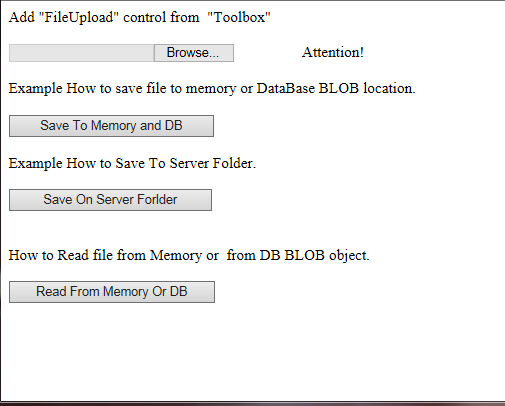
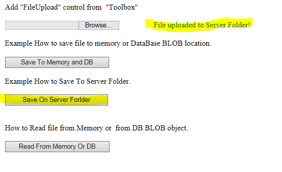
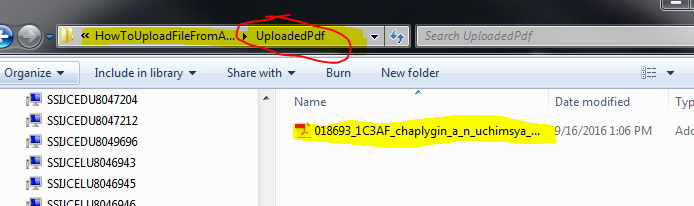
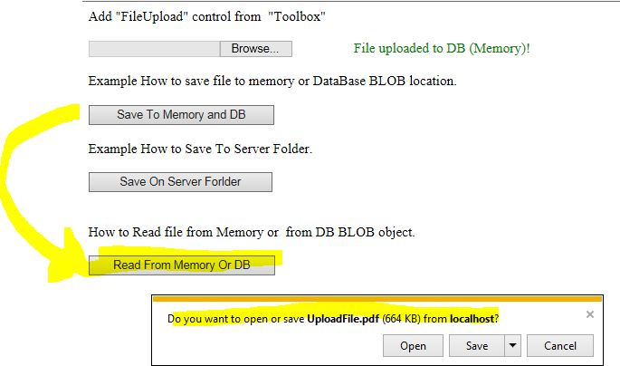

Example How To from User Computer upload file to Application Server or save file to DataBase BLOB column.
If you are new to ASP.NET Web Forms but have familiarity with programming concepts, you have the right tutorial. If you are already familiar with ASP.NET Web Forms, you can benefit from this tutorial series by the new features available in ASP.NET 4.0 ... and Visual Studio 2013. If you are unfamiliar with programming concepts and ASP.NET Web Forms it will be your first ASP net application ... Just start ...
Description
Open project with Visual Studio, setup start page to UploadFile.aspx and RUN.
It allow your application to read file from local PC, save it on Application Server, Save it in memory or insert in DataBase BLOB locatuion. It just template/example.
Some code which I used for access to DB I commented out ... If needed you can use DaatCommon class for access to any DataBase...

Save file which you choose from your PC [Browse] to application server.

Below screenshort just example, file was swve in "UploadPdf" folder.

Here read file in Memory and save bytes to BLOB location in Data Base.
When you save in memory you can read it again from memory to user's PC.

Imports System.Data.Common Imports System.IO Public Class UploadFile Inherits System.Web.UI.Page Protected Sub Page_Load(ByVal sender As Object, ByVal e As System.EventArgs) Handles Me.Load If Not IsPostBack Then 'Just for test purpose Session("MyData") = Nothing End If End Sub 'See original https://msdn.microsoft.com/en-us/library/ms227669.aspx 'Save file from user PC to Server - need to create folder ~/UploadedPdf/ and grant/verify permission for ApplicationServer - read/write/edit Protected Sub btnSaveOnServerForlder_Click(sender As Object, e As EventArgs) Handles btnSaveOnServerForlder.Click Dim path As String = Server.MapPath("~/UploadedPdf/") 'Server Folder (added this folder to solution) - Path on Server Side Dim fileOK As Boolean = False If FileUpload1.HasFile Then Dim fileExtension As String fileExtension = System.IO.Path.GetExtension(FileUpload1.FileName).ToLower() Dim allowedExtensions As String() = {".pdf", ".jpeg"} ' Just example to extension .pdf", ".jpeg For i As Integer = 0 To allowedExtensions.Length - 1 If fileExtension = allowedExtensions(i) Then fileOK = True End If Next If fileOK Then Try FileUpload1.PostedFile.SaveAs(path & FileUpload1.FileName) lblAttention.Text = "File uploaded to Server Folder!" lblAttention.ForeColor = Drawing.Color.Green Catch ex As Exception lblAttention.Text = "File could not be uploaded." lblAttention.ForeColor = Drawing.Color.Red End Try Else lblAttention.Text = "Cannot accept files of this type." lblAttention.ForeColor = Drawing.Color.Pink End If End If End Sub Protected Sub btnSaveToMemory_Click(sender As Object, e As EventArgs) Handles btnSaveToMemory.Click Dim fileOK As Boolean = False Dim strError As String = "" ' See class DataCommon ' Or go to https://code.msdn.microsoft.com/windowsapps/DataCommon-Class-Access-to-95b43838 ' Uncomment and insert your connection string , see web.config 'Dim db As DataCommon = New DataCommon() 'Dim cmd As DbCommand = db.commandDB If FileUpload1.HasFile Then Dim fileExtension As String fileExtension = System.IO.Path.GetExtension(FileUpload1.FileName).ToLower() Dim allowedExtensions As String() = {".pdf", ".jpeg"} ' Just example to extension .pdf", ".jpeg For i As Integer = 0 To allowedExtensions.Length - 1 If fileExtension = allowedExtensions(i) Then fileOK = True End If Next If fileOK Then Try Dim myFile As HttpPostedFile = FileUpload1.PostedFile Dim myData As Byte() = New Byte(myFile.ContentLength) {} ' see above it was made common - for test purpose... myFile.InputStream.Read(myData, 0, myFile.ContentLength) ' Read to memory ... 'Below Template how to insert to DB - you need to use BLOB type... 'Dim dic As Dictionary(Of String, Object) = New Dictionary(Of String, Object) From {{"@pPKname", "MyFilesName"}, {"@pBLOB", myData}} 'cmd.CommandText = "procInsertBlob" 'db.ExecuteSqlNonQuery(cmd, CommandType.StoredProcedure, dic) Session("MyData") = myData ' for test third button I save result to session ... lblAttention.Text = "File uploaded to DB (Memory)!" lblAttention.ForeColor = Drawing.Color.Green Catch ex As Exception lblAttention.Text = "File could not be uploaded." lblAttention.ForeColor = Drawing.Color.Red End Try Else lblAttention.Text = "Cannot accept files of this type." lblAttention.ForeColor = Drawing.Color.Pink End If End If End Sub 'http://www.mikesdotnetting.com/article/125/asp-net-mvc-uploading-and-downloading-files Protected Sub btnReadFromMemoryDB_Click(sender As Object, e As EventArgs) Handles btnReadFromMemoryDB.Click Dim db As DataCommon = New DataCommon() Dim cmd As DbCommand = db.commandDB Dim myData As Byte() ' BLOB Dim strFileName As String = "YourFileName.pdf" '---------------------------------------------------------- 'cmd.CommandText = "procBringBlob" 'Dim ds As DataSet = db.GetDataSet(cmd, CommandType.StoredProcedure, New Dictionary(Of String, Object) From {{"@pFileName", strFileName}}) 'Dim row As DataRow = ds.Tables(0).Rows(0) ' Just example 'myData = CType(row("BLOB"), Byte()) '---------------------------------------------------------- 'myData - Just Example - file here in binary format / could be bring from BLOB database column ... If Session("MyData") Is Nothing Then lblAttention.Text = "For test purpose please Upload in Memory First!" ' It just for test purpose ... lblAttention.ForeColor = Drawing.Color.Red Exit Sub End If myData = CType(Session("MyData"), Byte()) ' I use Session only for test purpose. Response.Clear() Response.ContentType = "application/pdf" Response.AppendHeader("Content-Disposition", "attachment; " + strFileName) ' myData - file name (also can be bring from DB) Response.BinaryWrite(myData) ' Binary data - see myData - Response.End() lblAttention.Text = "File downloaded from DB!" lblAttention.ForeColor = Drawing.Color.Green End Sub End Class
Imports System.Data.Common Imports System.IO Public Class UploadFile Inherits System.Web.UI.Page Protected Sub Page_Load(ByVal sender As Object, ByVal e As System.EventArgs) Handles Me.Load If Not IsPostBack Then 'Just for test purpose Session("MyData") = Nothing End If End Sub 'See original https://msdn.microsoft.com/en-us/library/ms227669.aspx 'Save file from user PC to Server - need to create folder ~/UploadedPdf/ and grant/verify permission for ApplicationServer - read/write/edit Protected Sub btnSaveOnServerForlder_Click(sender As Object, e As EventArgs) Handles btnSaveOnServerForlder.Click Dim path As String = Server.MapPath("~/UploadedPdf/") 'Server Folder (added this folder to solution) - Path on Server Side Dim fileOK As Boolean = False If FileUpload1.HasFile Then Dim fileExtension As String fileExtension = System.IO.Path.GetExtension(FileUpload1.FileName).ToLower() Dim allowedExtensions As String() = {".pdf", ".jpeg"} ' Just example to extension .pdf", ".jpeg For i As Integer = 0 To allowedExtensions.Length - 1 If fileExtension = allowedExtensions(i) Then fileOK = True End If Next If fileOK Then Try FileUpload1.PostedFile.SaveAs(path & FileUpload1.FileName) lblAttention.Text = "File uploaded to Server Folder!" lblAttention.ForeColor = Drawing.Color.Green Catch ex As Exception lblAttention.Text = "File could not be uploaded." lblAttention.ForeColor = Drawing.Color.Red End Try Else lblAttention.Text = "Cannot accept files of this type." lblAttention.ForeColor = Drawing.Color.Pink End If End If End Sub Protected Sub btnSaveToMemory_Click(sender As Object, e As EventArgs) Handles btnSaveToMemory.Click Dim fileOK As Boolean = False Dim strError As String = "" ' See class DataCommon ' Or go to https://code.msdn.microsoft.com/windowsapps/DataCommon-Class-Access-to-95b43838 ' Uncomment and insert your connection string , see web.config 'Dim db As DataCommon = New DataCommon() 'Dim cmd As DbCommand = db.commandDB If FileUpload1.HasFile Then Dim fileExtension As String fileExtension = System.IO.Path.GetExtension(FileUpload1.FileName).ToLower() Dim allowedExtensions As String() = {".pdf", ".jpeg"} ' Just example to extension .pdf", ".jpeg For i As Integer = 0 To allowedExtensions.Length - 1 If fileExtension = allowedExtensions(i) Then fileOK = True End If Next If fileOK Then Try Dim myFile As HttpPostedFile = FileUpload1.PostedFile Dim myData As Byte() = New Byte(myFile.ContentLength) {} ' see above it was made common - for test purpose... myFile.InputStream.Read(myData, 0, myFile.ContentLength) ' Read to memory ... 'Below Template how to insert to DB - you need to use BLOB type... 'Dim dic As Dictionary(Of String, Object) = New Dictionary(Of String, Object) From {{"@pPKname", "MyFilesName"}, {"@pBLOB", myData}} 'cmd.CommandText = "procInsertBlob" 'db.ExecuteSqlNonQuery(cmd, CommandType.StoredProcedure, dic) Session("MyData") = myData ' for test third button I save result to session ... lblAttention.Text = "File uploaded to DB (Memory)!" lblAttention.ForeColor = Drawing.Color.Green Catch ex As Exception lblAttention.Text = "File could not be uploaded." lblAttention.ForeColor = Drawing.Color.Red End Try Else lblAttention.Text = "Cannot accept files of this type." lblAttention.ForeColor = Drawing.Color.Pink End If End If End Sub 'http://www.mikesdotnetting.com/article/125/asp-net-mvc-uploading-and-downloading-files Protected Sub btnReadFromMemoryDB_Click(sender As Object, e As EventArgs) Handles btnReadFromMemoryDB.Click Dim db As DataCommon = New DataCommon() Dim cmd As DbCommand = db.commandDB Dim myData As Byte() ' BLOB Dim strFileName As String = "YourFileName.pdf" '---------------------------------------------------------- 'cmd.CommandText = "procBringBlob" 'Dim ds As DataSet = db.GetDataSet(cmd, CommandType.StoredProcedure, New Dictionary(Of String, Object) From {{"@pFileName", strFileName}}) 'Dim row As DataRow = ds.Tables(0).Rows(0) ' Just example 'myData = CType(row("BLOB"), Byte()) '---------------------------------------------------------- 'myData - Just Example - file here in binary format / could be bring from BLOB database column ... If Session("MyData") Is Nothing Then lblAttention.Text = "For test purpose please Upload in Memory First!" ' It just for test purpose ... lblAttention.ForeColor = Drawing.Color.Red Exit Sub End If myData = CType(Session("MyData"), Byte()) ' I use Session only for test purpose. Response.Clear() Response.ContentType = "application/pdf" Response.AppendHeader("Content-Disposition", "attachment; " + strFileName) ' myData - file name (also can be bring from DB) Response.BinaryWrite(myData) ' Binary data - see myData - Response.End() lblAttention.Text = "File downloaded from DB!" lblAttention.ForeColor = Drawing.Color.Green End Sub End Class